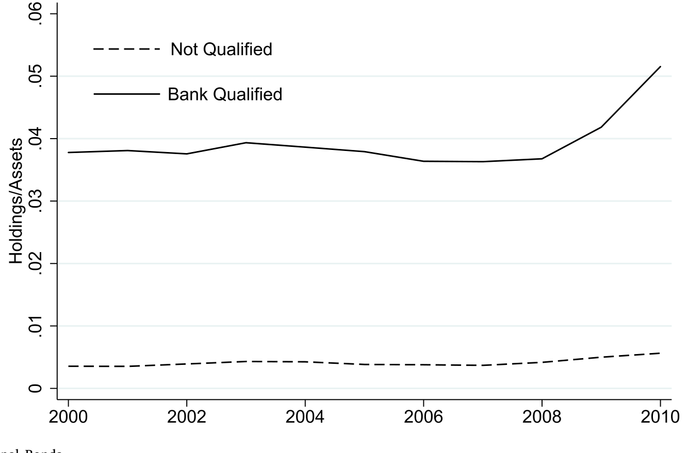
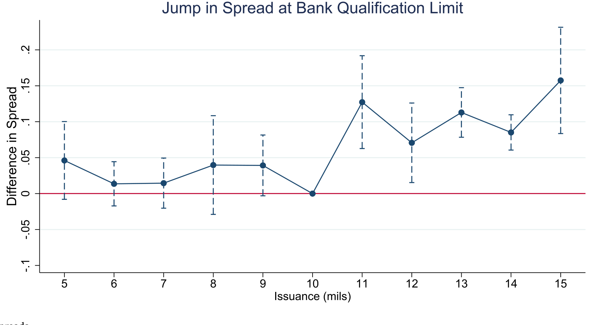
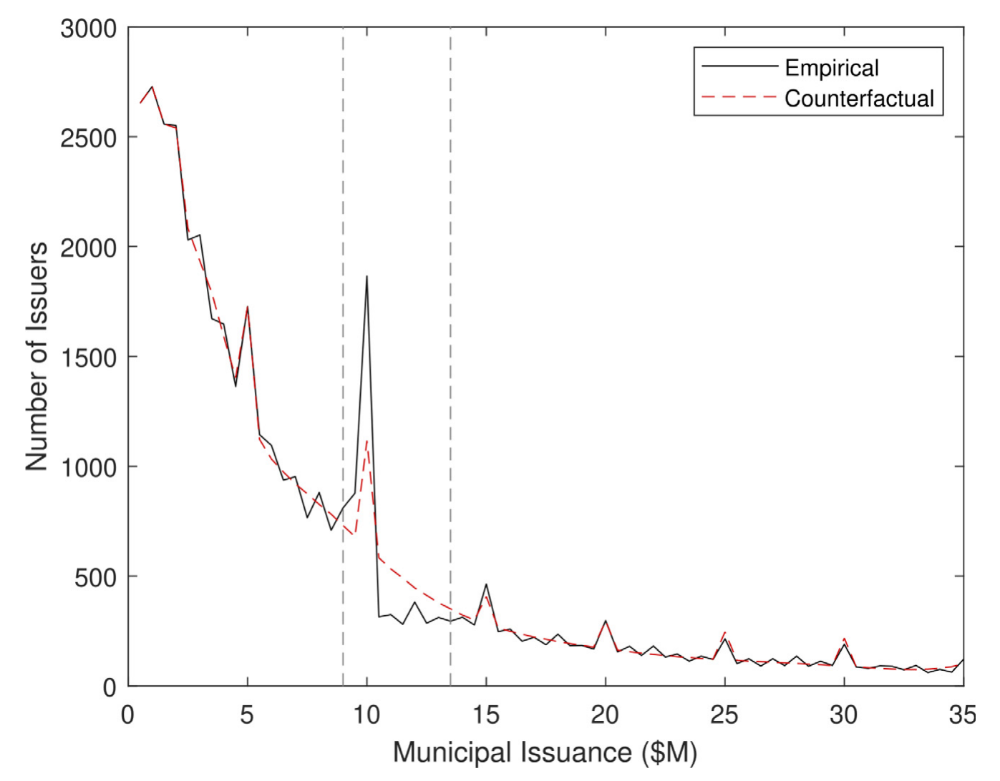
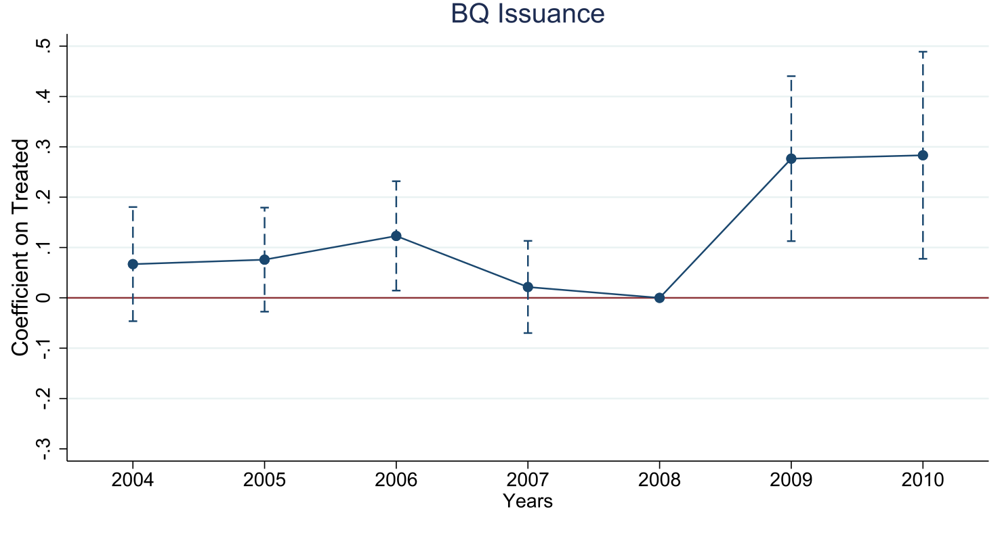
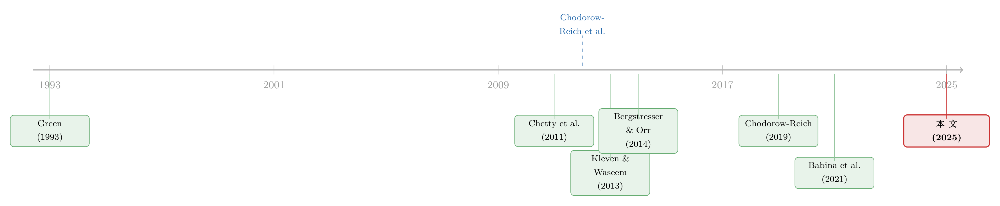

一道只为银行开的税收「缺口」，如何在衰退里造出七万个岗位
本文读的是 Dagostino (2025, Journal of Financial Economics)：美国联邦税法里有一道只对银行生效的「缺口」——市政发行人一年发债不超过 1000 万美元，银行买它的债就能享受全额税收优惠。2009–2010 年的经济刺激法案把这道门槛临时抬到 3000 万美元，等于一夜之间扩大了银行能「吃税补」的市政债池子。作者用聚束 (bunching) 估计、县级双重差分和两阶段最小二乘，证明这道松绑让受约束的小地方政府多发了债、并创造了就业：每 100 万美元支出约造出 22 个岗位，全国合计约 70,000 个，同时温和地挤出了银行的按揭投放。
1 一个奇怪的问题：给银行减税，能救活一座小镇吗？
先抛一个看上去有点别扭的问题。
经济衰退来了，一个小县城的财政捉襟见肘——它的收入高度依赖波动剧烈的税源，可它又被「预算必须平衡」的硬约束拴住。于是它只能砍开支、砍人头：教育、治安、基础设施首当其冲。更糟的是，地方政府一收缩，连带着私营部门的合同、需求也一起萎缩，衰退被自己放大了一圈。
这时候联邦政府想帮忙。最直接的办法当然是发钱——拨款、转移支付，ARRA（2009 年的《美国复苏与再投资法案》）里大头正是给到了医保和教育。但本文盯住的，是一个绕了个大弯、几乎没人注意的角落：联邦没有直接给地方政府一分钱，而是给买地方政府债券的银行减了一道税。
这就奇怪了。市政债 (municipal bonds) 主要用来修桥铺路、盖学校，是长期资本性支出，不是用来发工资、付水电的运营开支。那么，一个针对债券投资者（而且只针对银行）的税收优惠，真能在衰退中给地方政府「续命」吗？
这正是本文的核心张力：它研究的不是发钱，而是松开一道融资约束。地方政府仍要自己发债、自己拿未来税收去还本付息，银行也照样承担它的信用风险——这跟直接拨款不同，也跟贷款担保不同（关于担保如何重新分配信用风险，可参见《一块钱的担保，换走了多少自己的风险？》）。它要回答的是：单纯把融资的门开大一点，到底有没有用。
2 这道「缺口」从哪来：一个把市场劈成两半的税收设计
要理解全文，先得理解那道缺口本身。它不是比喻，是写进税法里的一条硬规定。
通常，银行持有市政债能拿到联邦税收好处：票息免税，而且为买债而借入资金所付的利息，大部分可以抵扣。但有个前提——这只债必须来自「银行合格 (bank-qualified)」的发行人。要拿到这个身份，发行人一个日历年里发债总额不得超过 1000 万美元。一旦越过这道线，它当年发的所有债都失去银行合格身份，银行买了就得放弃利息抵扣（即所谓 pro-rata disallowance）。
注意，这个差别只对银行成立。家庭和非银机构投资者无论发行人合格与否，都拿全额免税。换句话说，这条税法实际上把整个市政债市场沿着 1000 万美元这条线劈成了两半：线以下，是银行活跃的天地；线以上，地方政府就基本与银行融资绝缘，只能去面对家庭和机构。
这立刻带来两个可观测的后果。
第一，银行的持仓高度偏向合格债。 来自 Call Reports 的数据显示，银行持有的银行合格债占总资产的 4% 到 5%，而非合格债只占刚过 0.5%。银行用脚投票，几乎只碰能拿全额税补的那一类。

Figure 1: Banks’ Holdings of Municipal Bonds
第二，被银行「宠着」的那一段市场，借钱更便宜。 作者把市政债的到期收益率做税收调整、换算成「联邦应税等价收益率」，再减去同期限国债算出利差。结果是：越过银行合格门槛后，非合格债的利差比合格债高出约 10 个基点；考虑到平均利差是 132.7 个基点，这相当于贵了约 7.5%。

Figure 3: Municipal Bond Spreads
于是一个自然的问题冒出来了：既然线以下更便宜、线以上更贵，地方政府会不会故意把发债规模压在 1000 万美元以下，以保住银行这个金主？
3 识别策略之一：从「聚束」里读出被压抑的融资需求
答案是会。而且作者用一个很漂亮的办法把这种「故意压低」量化了出来——聚束估计 (bunching estimation)。
直觉很简单：如果没有这道税收缺口，发行人的规模分布应该是平滑的；可一旦 1000 万美元处有个「悬崖」，就会有一批本来想发更多的发行人，把规模硬压到门槛正下方，造成那里异常拥挤（聚束），而门槛正上方则出现一段异常稀疏（缺失质量）。2000–2008 年的分布里，1000 万美元正下方确实堆起一个尖峰、正上方明显塌陷；而到了门槛临时抬高到 3000 万美元的 2009–2010 年，这个 1000 万处的尖峰显著消退——这本身就是政策起作用的直接证据。

Figure 5: shows the results of the bunching estimation. This figures
模型一步步：怎么把「聚束」翻译成一个数字
聚束估计的核心，是先估出一条「假如没有缺口本该长什么样」的反事实分布，再拿真实分布去减。作者沿用 Chetty et al. (2011) 的框架，设 \(n_j\) 为落在第 \(j\) 个规模桶里的发行人数，\(b_j\) 为该桶到门槛（取对数后）的平均距离，估计方程为：
这里第三项至关重要：因为发行人天然偏好整数（5M、10M、15M……），而 1000 万本身就是个整数倍，如果不控制这种「凑整数」习惯，就会把整数偏好误当成政策反应、从而高估缺口处的行为响应。
有了拟合系数，反事实分布就是去掉排除区间那组虚拟变量、但保留整数固定效应后的预测值：
$$\hat{n}_j = \sum_{i=0}^{p}\hat\beta_i (b_j)^i + \sum_{r\in R}\hat\eta\,\mathbf{1}\{r\in R\}$$
接着，门槛左侧多出来的「超额聚束」就是观测减反事实之和，它度量的是集约边际 (intensive margin)——有多少债券被「缩小」了：
$$\hat{D} = \sum_{j=L}^{0}(n_j-\hat{n}_j) = \sum_{j=L}^{0}\hat\gamma_j$$
对称地，门槛右侧「缺失的质量」是：
$$\hat{M} = \sum_{j>0}^{U}(\hat{n}_j-n_j) = -\sum_{j>0}^{U}\hat\gamma_j$$
巧妙之处在于：\(\hat D\) 和 \(\hat M\) 不必相等。如果二者一致，说明发行人只是把债压小（集约边际）；可一旦 \(\hat M > \hat D\)，差额 \(\hat M - \hat D\) 就捕捉了广延边际 (extensive margin)——有些发行人干脆被挤出了市场、根本没借成。这一区分让作者能把「少借」和「不借」分开看。
最后，把超额聚束除以缺口处的反事实密度，就得到了边际聚束者的行为响应——也就是因这道缺口而被压低的发债比例 \(\Delta B^*\)：
$$\Delta B^* = \frac{\hat{D}}{\hat{h}_0(B^*)}, \qquad \hat{h}_0(B^*) = \sum_{j=L}^{0}\hat{n}_j \,\Big/\, |b_0 - b_L|$$
估计结果：发行人平均把一年的发债规模压低了约 3%，以挤进 1000 万美元的银行投资线之内。3% 听上去不大，但它是「平均」，对那些真正顶到门槛的地方政府，约束是实打实地咬住了——意味着推迟的投资、更高的发行费用。作者还检查了「跨年分摊」这条可能的逃逸路径：聚束发行人确实比别人发债更频繁，但大多数并不会连续两年进场，说明靠动态调整来规避门槛并不是普遍策略。约束是真的。
4 识别策略之二：DiD + 2SLS，把「松绑」翻译成就业
到这里，故事完成了第一次转折：缺口确实在压抑小地方政府的融资。那么自然的下一问是——2009 年把门槛抬到 3000 万美元，这些被压抑的需求会不会反弹？反弹又会不会变成真实的就业？
第一步，看发债。 作者在县级层面构造处理组与对照组：把发行人分成两类——一类是 2008 年前聚束在 1000 万附近的银行合格发行人（对它们，银行融资上限是「咬住」的约束）；另一类是规模远低于门槛、根本没被约束的小发行人。一个县只要有至少一个聚束发行人，就被定义为「处理」县。然后比较政策前后、处理县与对照县在银行合格市政债发行上的变化。
结果是经济与统计上都显著的：受影响地方政府占比每提高一个标准差，县级地方债发行平均增加约 270 万美元。

Figure 8: Effects on Issuance
这里有个很说明问题的安慰剂式证据：那些原本在 1000 万到 3000 万区间、本次新获得「银行合格」资格的较大发行人，并没有因此多借。原因正如理论所预期——它们本来就不受约束，传统债券市场对它们一直开着门。政策只对「真正被绑住的人」起作用。
第二步，从发债到就业，必须处理内生性。 直接拿就业去回归支出是危险的：经济越惨的地区可能借得越多，反向因果会污染估计。作者的解法是用政策变化本身作为工具变量，做两阶段最小二乘 (2SLS)，用政策诱致的发债去解释地方就业。
核心结果掷地有声：每多 100 万美元由政策带来的支出，每年创造约 22 个岗位。这个就业集中在私营部门，对政府雇员影响有限；私营部门里又主要是服务业——这与本地乘数文献的判断一致：可贸易品部门的好处会外溢到邻近地区，因而在本地估出来更低、更不精确，反倒是非贸易部门的效应看得最清楚。配套的工资账单乘数 (wage bill multiplier) 约为 0.70。
把这个乘数放到全国：政策带来约 31.6 亿美元的银行合格债（即聚束政府越过 1000 万门槛多发的部分），对应约 70,000 个岗位被创造或保住，县均约 252 个；折算下来，地方政府每年「造一个岗位」的成本约 45,500 美元（即 100 万 ÷ 22）。
这个 22 落在既有文献的区间里——Chodorow-Reich (2019) 综述的地方财政乘数通常在每百万美元 7.6 到 39 个岗位之间。但要诚实：这项政策的总量远小于 ARRA 这类大型刺激，毕竟它只惠及小镇和小学区。它的价值不在体量，而在机制的清晰。
5 反转：把钱「吃」进市政债的银行，少放了多少按揭？
故事到这里像是个皆大欢喜的结局。但真正关键的一步，是作者没有就此收手，而是反过来问：银行多买了市政债，钱从哪来？会不会挤出别的信贷？
要回答这个，得有外生于「需求」的银行持仓变化。作者构造了一个 Bartik 式工具变量 (Bartik-like instrument)：把银行在某县的存款份额，与该县发行的银行合格债规模做内积，得到一个「这家银行平均能买到多少市政债」的暴露度，再除以银行总资产标准化。为避免被同期存款变动污染，份额固定在政策前一年。然后，靠「同一个县内、不同银行」的比较来吸收掉本地信贷需求（关于用存款份额做这类跨地区识别的思路，亦可参见《存款往哪儿流，比哪家银行倒下更重要》）。
结论是分裂的：对 CRA 口径下的小企业贷款，挤出很弱；但银行确实因为多持市政债而减少了按揭发放——有「适度证据 (moderate evidence)」表明私人信贷被公共债务挤出了。换句话说，这道帮了地方政府的政策，在银行的资产负债表上是有代价的，只是代价落在了房贷而非小微企业上。
6 文献脉络：从「税与收益率曲线」到「缺口即政策」
把这篇论文放进它的谱系里看，会更清楚它站在哪。
最早的一支，是市政债的税收定价研究：Green (1993) 给出应税与免税收益率曲线的简单模型，后续 Babina et al. (2021) 用税收异质性解释市政债价格与有限的风险分担。这一支告诉我们：税，是市政债市场的第一性力量。
另一支，是衰退中的财政干预与乘数：Chodorow-Reich et al. (2012) 用 ARRA 估计州财政纾困对就业的效果，Chodorow-Reich (2019) 把地方横截面财政乘数做了系统综述。这一支提供了「乘数」这把尺子。
还有一支方法论的支柱：Chetty et al. (2011) 把聚束作为识别行为响应的工具，Kleven & Waseem (2013) 进一步用「缺口 (notch)」揭示优化摩擦与结构弹性。本文恰恰把这套工具搬到了市政债市场。
加上 Bergstresser & Orr (2014) 记录了商业银行对市政债投资的上升，以及一支关于主权债挤出私人信贷的文献（Broner et al. 2014; Becker & Ivashina 2018 等）。

本文的位置，是把这几股线拧成一根绳：它第一次把「税收缺口」既当作分割市场的制度事实、又当作识别外生变化的设计，用同一道缺口同时回答了三个问题——市场被投资者类型分割了吗（是）、松绑融资约束能刺激地方经济吗（能）、代价是不是挤出私人信贷（部分是）。
7 评论与延伸（Q&A + 研究方向）
(a) 几个可能的疑问
Q：「缺口 (notch)」和我们熟悉的「断点 (kink)」是一回事吗？
不是。断点改变的是斜率（越线后边际税率变了），缺口改变的是水平（越线后一整笔的待遇跳变）。这里只要发债多 1 美元越过 1000 万，当年全部债券都失去银行合格身份——这是典型的 notch，会制造比 kink 更剧烈的聚束，也正因如此聚束信号格外干净。
Q：22 个岗位的乘数可信吗，会不会只是把邻县的就业搬了过来？
作者自己点明了这个担忧：可贸易部门的好处会外溢到邻近地区，所以本地估计会偏低、偏不精确，而非贸易（服务业）部门看得最清。换句话说，
22更可能是偏保守的本地净效应，而非把外溢一并算进的夸大值。它落在 Chodorow-Reich (2019) 的7.6–39区间内，量级上是站得住的。
Q：处理组定义为「县里有至少一个聚束发行人」，会不会本身就内生？
这是识别上最该盯的地方。聚束身份由政策前的发债行为界定，但一个县是否有聚束发行人，可能与该县的经济结构相关。作者用县内固定效应、并比较「受约束 vs 未约束」两类发行人来缓解，新获资格的大发行人「不反应」这一安慰剂结果也增强了可信度——但严格的平行趋势仍是读者要自行掂量的。
Q：为什么受益的是小镇，而不是中等规模的地方政府？
因为 1000 万门槛只对本来就被绑住的小发行人是约束。1000 万到 3000 万区间的较大政府，原本就能顺畅进入传统债券市场，松绑对它们形同虚设——数据也显示它们没多借。政策的好处天然集中在「最缺融资渠道」的那一端。
Q：挤出按揭、却不太挤出小企业贷款，这反直觉吗？
有点，但讲得通。CRA 口径的小企业贷款规模小、且银行有合规激励去维持；而按揭是银行资产配置里更有弹性、更易被「替换」的一块。当税补让市政债变得格外划算，银行优先腾挪的是按揭额度。这与「公共债务挤出私人信贷」的文献方向一致，只是落点具体到了房贷。
Q：这跟直接发拨款、或贷款担保比，关键差别在哪？
三者承担风险的人不同。拨款是联邦真出钱；贷款担保是联邦兜底信用风险；而这道政策里，联邦只让渡了一点税收，地方政府仍自负偿债、银行仍自担信用风险。所以它的成本对联邦最低、对市场扭曲也更「外科手术式」，代价则是要依赖银行愿意接盘——一旦银行资产负债表紧张，传导就会打折。
(b) 几个可能的研究问题与提案
1. 把同一道缺口搬到 COVID（2020–2021）再验一次。
【经济故事】2020 年地方政府再次因疫情陷入财政困境，市场普遍呼吁重提「抬高银行合格门槛」。如果有过一次类似松绑，就能检验本文乘数在不同衰退性质下是否稳定（金融危机 vs 疫情冲击）。 【可行性】中。需要确认是否真有政策变化；MuniIC/EMMA 发债数据 + QCEW 就业都可得，识别可沿用本文的聚束 + DiD。难点在于疫情期联邦救助（ARP）规模巨大，要把这道小政策的效应从大刺激里干净地剥出来。
2. 谁在门槛右侧「消失」了？——广延边际的真实成本。
【经济故事】本文用 \(\hat M - \hat D\) 指出存在被挤出市场的发行人，但没深挖它们后来怎样了：是推迟了项目、转向了银行贷款（Ivanov & Zimmermann 2022 记录的市政债私募化），还是干脆没修那座桥？ 【可行性】中高。可把聚束发行人与其后续的市政贷款、项目竣工/基建数据匹配，追踪「被迫不发债」的实物后果。数据零散是主要障碍，但识别逻辑直接。
3. 把挤出效应推进到公司债与信用市场。
【经济故事】本文发现银行多持市政债会挤出按揭。一个自然延伸是：当某类「享税补的安全资产」供给突然增加，银行会优先削减哪一类风险暴露？对公司债承销、对中小企业信贷的传导，是否随银行资本约束的松紧而异？ 【可行性】中。Call Reports + 银团/公司债持仓数据可得，可用本文的 Bartik 暴露度作为冲击；难点是公司信贷需求的同期变化更难用「县内比较」吸收。
4. 外资 vs 本地银行：谁来接盘，决定了挤出落在哪。
【经济故事】本文的传导高度依赖「银行合格债主要被本地银行持有」。如果接盘人换成外资或非银机构，挤出的对象、乃至乘数本身会不会改变？这把「谁持有」推到了政策有效性的核心。 【可行性】中。需要把发行人—持有人匹配到投资者类型；非银/外资持仓披露有限是硬约束，可能要靠 SOD 存款份额 + 机构持仓数据库拼接，识别难度偏高但方向新颖。
5. 缺口处的「整数偏好」本身值得单独研究。
【经济故事】作者不得不专门控制 5M 倍数的整数偏好，否则会高估行为响应。但整数偏好为何如此顽固？它是发行人认知摩擦、还是承销定价惯例的产物？这关系到所有用聚束做市政市场识别的研究的可信度。 【可行性】高。纯描述 + 结构估计即可，MuniIC 数据充分；是一个小而扎实、且能给整条聚束文献「打地基」的题目。
8 我的判断
贡献。 这篇论文最聪明的地方，是把一道写死在税法里的「缺口」一物三用：它是分割市场的制度、是识别外生变化的设计、也是衡量约束强度的标尺。由此它把一个少有人碰的政策角落——「通过给银行减税来扩大地方政府融资渠道」——做成了一个干净的准自然实验，并诚实地同时报告了正面（就业）与负面（挤出按揭）两侧。22 个岗位/百万美元、县均 252 个、每岗位约 45,500 美元成本，这些数字让一个抽象的税收条款变得可被政策制定者直接拿来权衡。
对识别的担忧。 两点。其一，县级 DiD 的处理组由政策前的聚束行为界定，平行趋势虽有安慰剂结果支撑，但聚束发行人所在的县是否在其他维度上系统不同，仍需更多事前趋势图来打消疑虑。其二，2SLS 把「政策变化」当作支出的工具，其排他性约束依赖于「政策只通过放松融资约束影响就业」——可 ARRA 是一揽子计划，同期还有大量其他联邦资金流向同一批地方，要让这道小政策的工具变量真正「干净」，对同期其他冲击的控制是成败关键。
后续想看到什么。 我最想看到的是把广延边际坐实：那些在门槛右侧「消失」的发行人，究竟推迟或放弃了哪些实物项目——这才是「融资约束」最有血肉的成本。其次，是把挤出效应从按揭推广到更广的信用市场，并检验它如何随银行资本充足度变化。地方政府没有破产法、却有还本付息的「到期日」，它们在衰退中的融资困境本身就是个大题目（这一主题，亦可参见《城市没有破产法，但有「到期日」：大萧条里的地方公共品》）。
参考文献
- Babina, T., Jotikasthira, C., Lundblad, C., Ramadorai, T. (2021). Heterogeneous taxes and limited risk sharing: Evidence from municipal bonds. Review of Financial Studies 34(1), 509–568.
- Becker, B., Ivashina, V. (2018). Financial repression in the European sovereign debt crisis. Review of Finance 22(1), 83–115.
- Bergstresser, D., Orr, P. (2014). Direct bank investment in municipal debt. Municipal Finance Journal 35(1), 1–23.
- Broner, F., Erce, A., Martin, A., Ventura, J. (2014). Sovereign debt markets in turbulent times: Creditor discrimination and crowding-out effects. Journal of Monetary Economics 61, 114–142.
- Chetty, R., Friedman, J.N., Olsen, T., Pistaferri, L. (2011). Adjustment costs, firm responses, and micro vs. macro labor supply elasticities: Evidence from Danish tax records. Quarterly Journal of Economics 126(2), 749–804.
- Chodorow-Reich, G. (2019). Geographic cross-sectional fiscal multipliers: What have we learned? American Economic Journal: Economic Policy 11(2), 1–34.
- Chodorow-Reich, G., Feiveson, L., Liscow, Z., Woolston, W.G. (2012). Does state fiscal relief during recessions increase employment? Evidence from the American Recovery and Reinvestment Act. American Economic Journal: Economic Policy 4(1), 118–145.
- Green, R.C. (1993). A simple model of taxable and tax-exempt yield curves. Review of Financial Studies 6, 233–264.
- Ivanov, I., Zimmermann, T. (2022). The privatization of municipal debt. Journal of Financial Economics 146(1), 150–171.
- Kleven, H.J., Waseem, M. (2013). Using notches to uncover optimization frictions and structural elasticities: Theory and evidence from Pakistan. Quarterly Journal of Economics 128(2), 669–723.